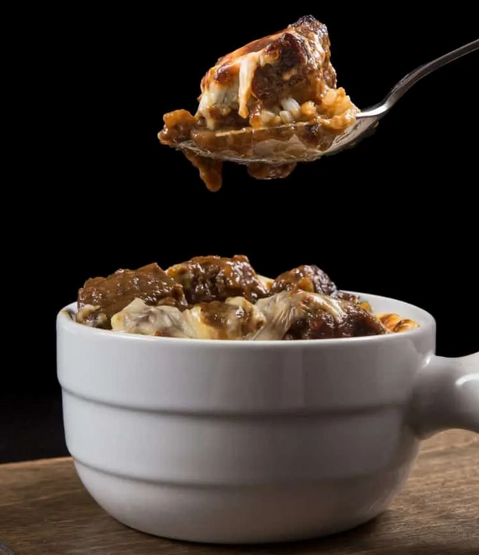

Instant Pot Japanese Beef Curry

Description
This simple and easy instant pot recipe takes a bit of time and patience, but the
final product is well worth it. You will need Japanese curry cubes, and a number
of other ingredients.
Ingredients
- 2 pounds (937g) chuck steak, 1.5 inch in thickness
- 6 medium garlic gloves, chopped
- 3/4 cup (190ml) unsalted chicken stock
- 2-3 Japanese curry roux cubes
- 1 tablespoon (15ml) Japanese soy sauce
Steps
- Prepare Pressure Cooker: Heat up your pressure cooker (Instant Pot: press Sauté button) over medium heat. Ensure your pot is as hot as it can be (Instant Pot: wait until indicator says HOT).
- Brown Chuck Steak: Adjust to medium high heat (Instant Pot: press cancel, Sauté button and Adjust once to Sauté More function. Wait until indicator says HOT). Lightly season chuck steak with kosher salt & black pepper. Add 1 tbsp (15ml) of olive oil in the pot. Ensure to coat oil over whole bottom of the pot. Add seasoned chuck roast in the pot. Brown for 6 – 8 mins on each side without flipping. Remove and set aside on a chopping board.
- Sauté Garlic: Add in chopped garlic and stir until fragrant.
- Deglaze: Pour in roughly ½ cup (100 ml) of unsalted chicken stock and completely deglaze the pot by scrubbing all flavorful brown bits with a wooden spoon.
- Pressure Cook Chuck Roast: Cut chuck steak into 1.5 – 2 inches stew cubes, and place them along with its meat juice back to the pot. Add remaining unsalted chicken stock, 1 tbsp (15ml) Japanese soy sauce and caramelized onion purée. Mix well. Close lid and pressure cook at High Pressure for 32 minutes + 10 minutes Natural Release. Release remaining pressure. Open lid.
- Make Japanese Curry: Taste the caramelized onion beef stew. Mix in the Japanese curry roux cubes one by one while tasting for the right balance of flavors. Taste and add more curry roux or Japanese soy sauce if necessary. We used roughly 2.5 (95g) Japanese curry roux.
- Serve: Serve over Calrose rice. We sprinkled some mozzarella cheese on top and baked it in the oven until the cheese melted and browned. Just like how the restaurant served it.